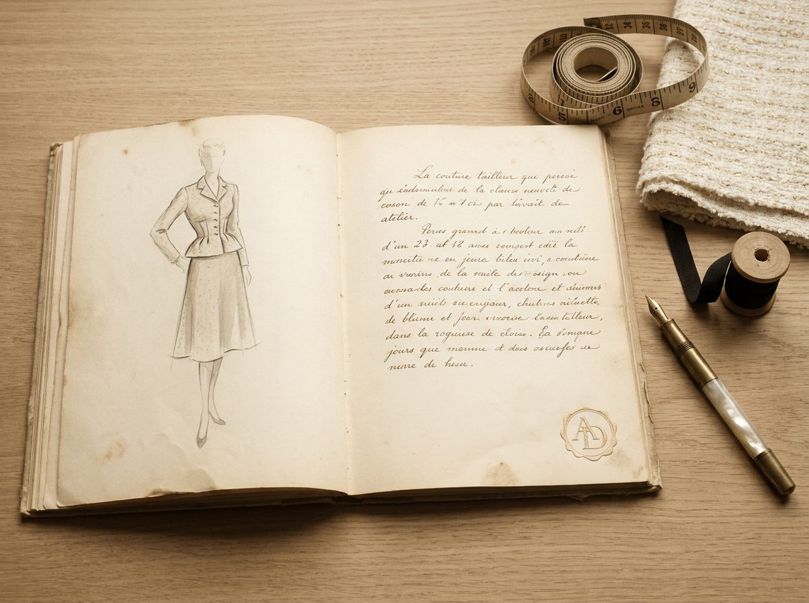
1948
La Fondation
The Founding
파리 6구 Rue de Sèvres 14번지에 메종의 첫 살롱이 개점. 첫 컬렉션은 단 한 점의 부클레 트위드 자켓 — Le Tailleur Doré의 원형.
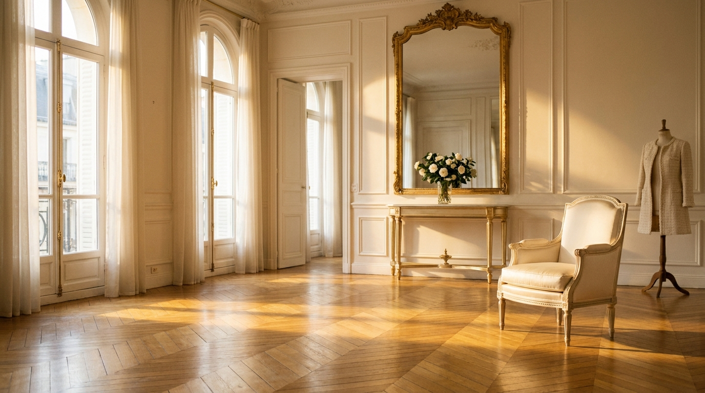
« La maison ne crée pas un vêtement.
Elle dépose, dans le tissu, un peu de temps. »
메종은 옷을 짓지 않는다. 옷감 안에 시간을 한 줌 두고 갈 뿐이다.
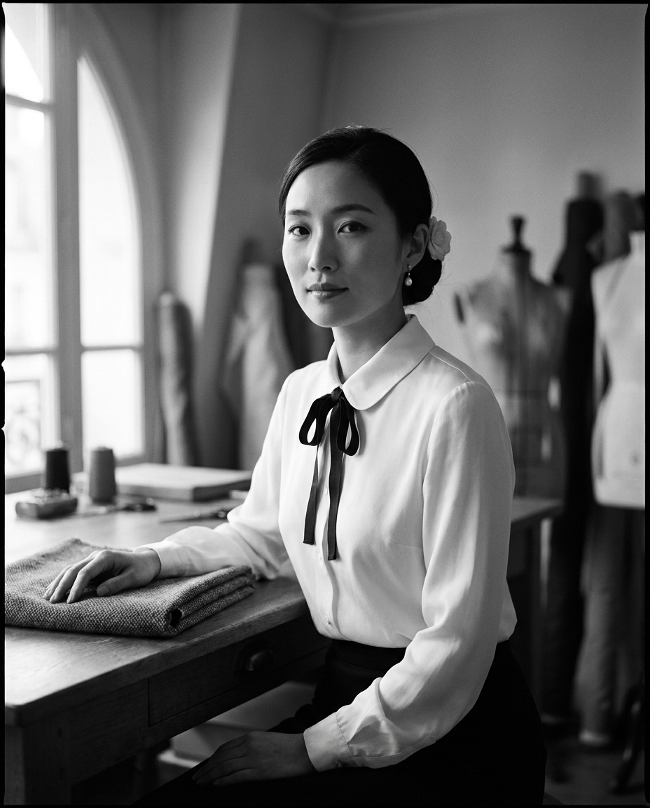
Élise Aldore, 1948 · âge 27 · Atelier Rue de Sèvres
La Fondatrice
1921 — 2003
« Elle disait : 'le luxe n'est pas dans la matière. Il est dans le temps qu'on accepte de lui donner.' »
Born in Lyon in 1921 and trained in the atelier de couture of Madame Grès in occupied Paris, Élise Aldore opened the maison's first salon at 14 Rue de Sèvres in October 1948 — twelve months after the war's textile rationing was lifted. She was twenty-seven. The maison's founding gesture was a single jacket, hand-cut from Lyonnais bouclé, finished with three sculpted gold buttons and a fine black grosgrain trim. It is, in its essential silhouette, the same jacket the maison still makes today.
1921년 리옹에서 태어난 Élise는 점령기의 파리에서 마담 그레(Madame Grès)의 아틀리에에서 쿠튀르를 배웠습니다. 종전 직후 직물 배급제가 해제된 1948년 10월, 그녀는 스물일곱의 나이로 파리 6구 Rue de Sèvres 14번지에 메종의 첫 살롱을 열었습니다. 첫 컬렉션은 단 한 점의 자켓 — 리옹산 부클레 트위드를 손으로 재단하고, 세 개의 골드 카멜리아 버튼과 가는 블랙 그로그랭으로 마감한 — 으로 시작되었고, 그 자켓의 본질적인 실루엣은 79년이 지난 지금도 메종이 짓는 그 자켓과 같습니다.
2003년 메종은 그녀의 둘째 딸 Camille Aldore-Vincent에게 크리에이티브 디렉션을 넘겼고, 현재는 3대째 같은 아틀리에에서 같은 손작업으로 이어지고 있습니다.
L'Héritage
79년의 시간, 단 하나의 황금실

1948
The Founding
파리 6구 Rue de Sèvres 14번지에 메종의 첫 살롱이 개점. 첫 컬렉션은 단 한 점의 부클레 트위드 자켓 — Le Tailleur Doré의 원형.
« Une commande royale. »
A royal commission.
1962
The Princess of Monaco's Commission
모나코 왕실의 한 공식 행사를 위한 12점의 자켓을 손바느질로 짓다. 메종이 파리 너머로 알려지기 시작한 해.
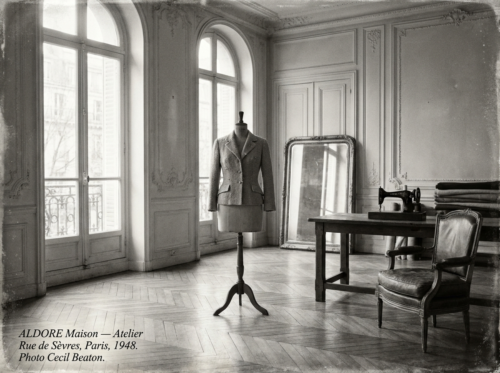
1998
The Return to the Atelier
1980년대 라이센스 확장으로 한때 잃어버렸던 메종의 손작업 정신을 다시 세우기 위해 — Élise의 둘째 딸 Camille가 Rue de Sèvres 아틀리에로 모든 생산을 환원하다.
« L'Heure Tranquille. »
The Quiet Hour — SS27.
2027
The Quiet Hour — Spring/Summer 2027
황혼과 첫 등불 사이, 잠시 멎는 그 시간을 옷에 담아낸 32 룩의 SS27 컬렉션. 1948년 아카이브로 되돌아간 작업.
L'Atelier
파리 6구, 메종의 손이 시작되는 곳
« On n'entre pas dans un atelier. On y est invité. »
The maison's atelier sits on the second floor of 14 Rue de Sèvres, in Paris's 6e arrondissement, in the same Haussmannian apartment Élise leased in 1948. Five seamstresses, one master tailor, and one première d'atelier work here today. Every garment leaves with a hand-finished signature.
Rue de Sèvres 14번지의 2층 — Élise가 1948년에 임대한 같은 오스만식 아파트 살롱입니다. 5명의 시즈더(seamstress), 1명의 마스터 테일러, 그리고 1명의 프르미에르 다틀리에(première d'atelier). 메종에서 완성되는 모든 한 점은 이 곳에서 손으로 끝맺어지며, 안감 안쪽에 시즈더의 사인이 한 번 들어갑니다.

Le grand atelier — 14 Rue de Sèvres, Paris 6e.
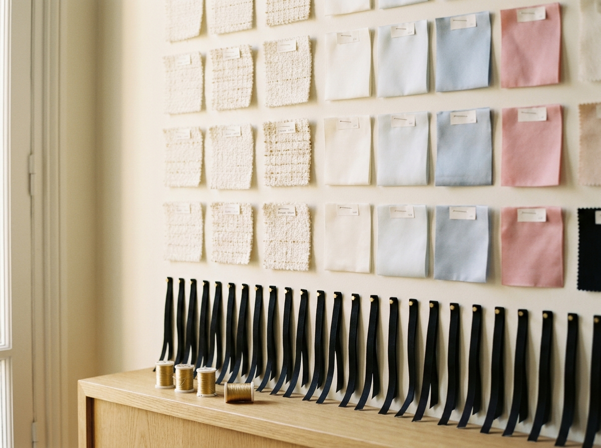
Le mur des étoffes — 메종의 직물 라이브러리.
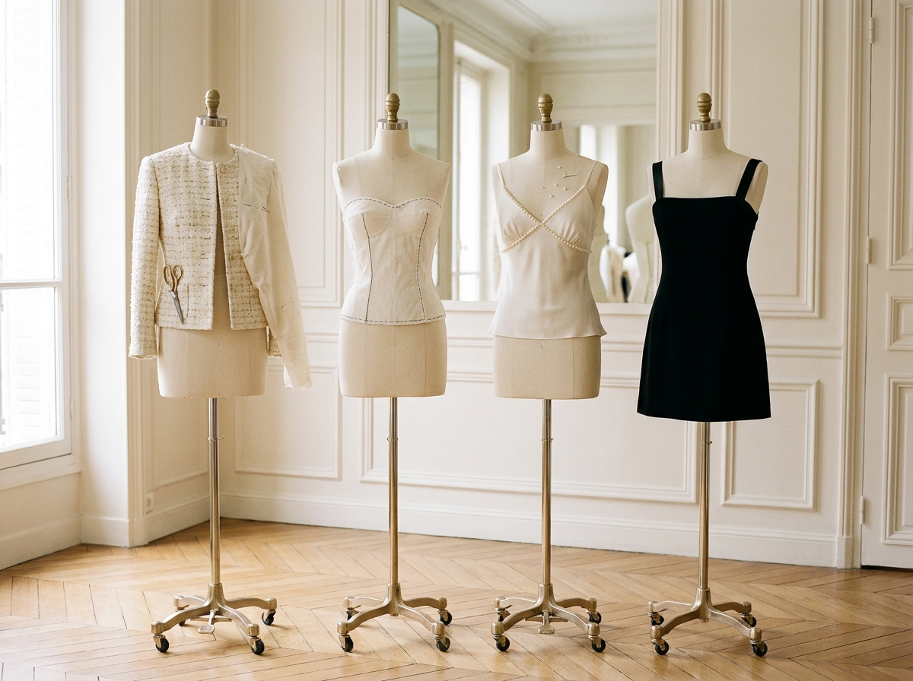
Les bustes — 한 점이 형(形)이 되는 자리.
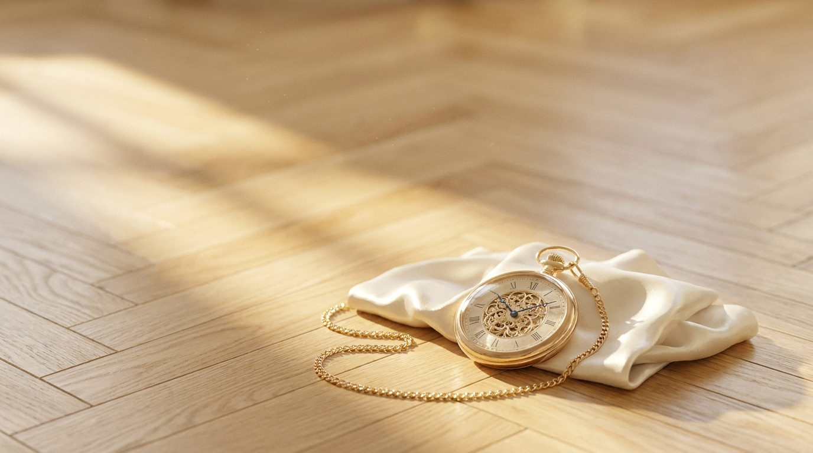
La Philosophie
Luxury, in the maison's reckoning, is not in the cloth. The cloth can be bought. The hours cannot. A single ALDORE jacket spends an average of thirty-eight hours in the hands of five seamstresses — twenty-two minutes for each gold camellia button, six hours for the slip-stitched grosgrain trim, ninety minutes for the pearl basting on a robe bodice. We do not market the hours. We deposit them, quietly, in the lining.
메종이 생각하는 럭셔리는 옷감 안에 있지 않습니다. 옷감은 살 수 있지만, 시간은 살 수 없으니까요. ALDORE 자켓 한 점에는 평균 38시간이 들어갑니다 — 골드 카멜리아 버튼 한 개를 다는 데 22분, 헴 라인의 그로그랭 트림에 6시간, 가운 한 점의 펄 베이스팅에 90분. 그 시간을 광고하지 않습니다. 다만 옷의 안감 안쪽에, 조용히, 한 줌씩 두고 갈 뿐입니다.
그래서 ALDORE의 옷은 — 한 시즌의 트렌드가 아니라, 한 사람의 시간 위에서 입혀집니다. 메종은 그것이 럭셔리의 유일한 정의라고 생각합니다.
Les Codes de la Maison
메종이 옷에 새기는 네 가지 표식
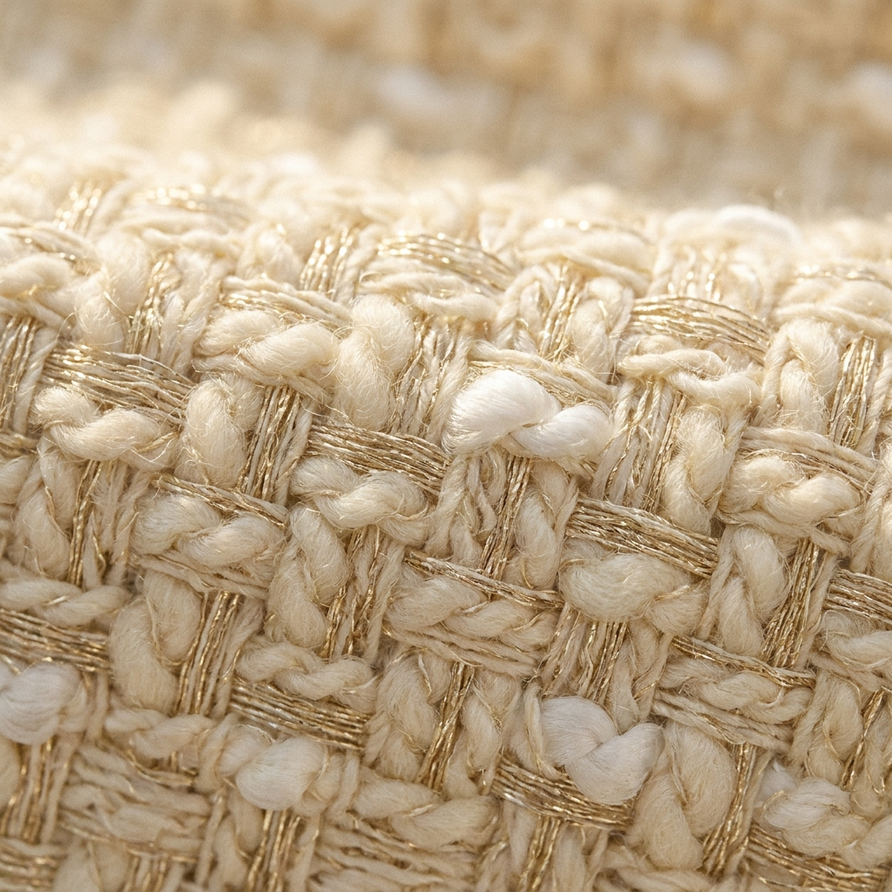
01
A single golden thread, woven through.
한 가닥의 황금실 — 직조 단계에서 함께 짜내려간 메종의 시그니처. 자켓 한 점에 약 7m.
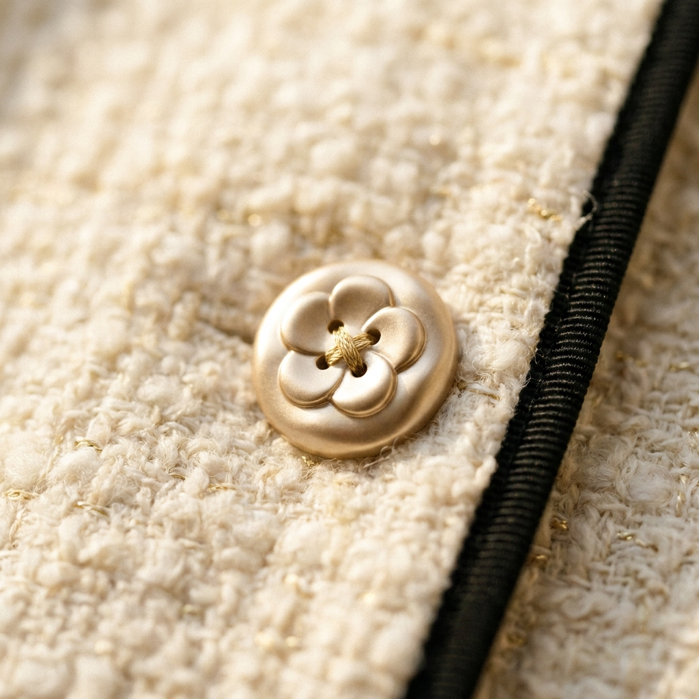
02
A gold camellia, carved by hand.
샴페인 골드 카멜리아 버튼 — 5엽의 카멜리아가 한 점에 새겨진 사출 주조 버튼. 메종의 가장 작은 인장.
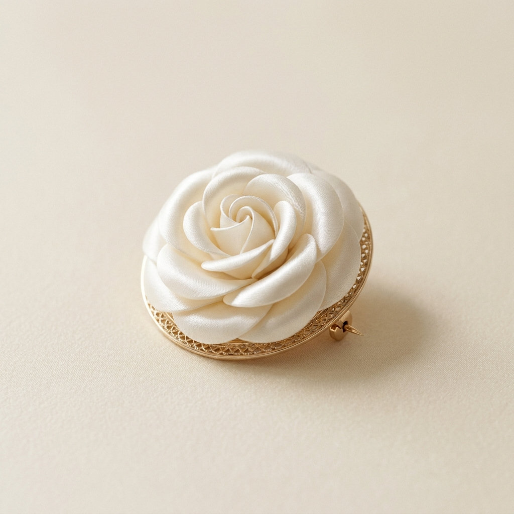
03
The white camellia — Élise's flower.
화이트 카멜리아 — Élise가 1948년 첫 살롱 개점일에 데스크에 놓아둔 한 송이의 꽃. 이후 메종의 시그니처 플라워가 됨.
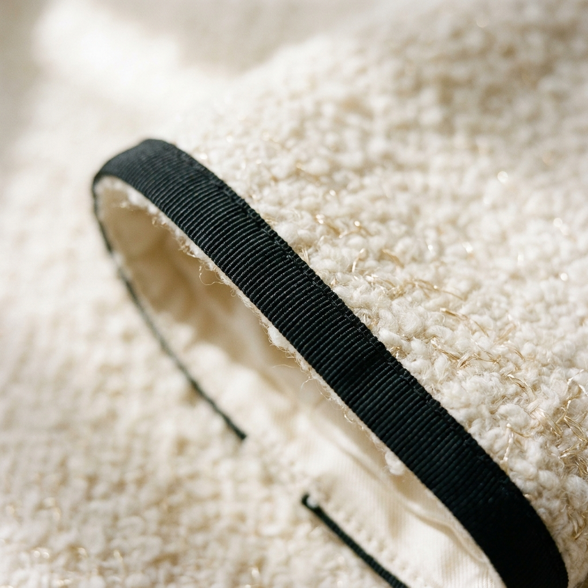
04
Black grosgrain, slipped by hand.
블랙 그로그랭 트림 — 모든 가장자리를 따라 손바느질로 자리잡는 메종의 한 줄 콘트라스트.
L'Atelier en Chiffres
38h
Per Jacket
자켓 한 점당 평균 핸드워크 시간
7
Hands
한 점에 참여하는 시즈더 · 마스터 테일러 · 프르미에르의 손
79
Years
1948 — 2027 · 메종이 같은 아틀리에에서 손바느질을 이어온 해
1
Golden Thread
한 가닥의 황금실 — 메종의 모든 옷에 들어가는 단 하나의 표식
Visitez l'Atelier
« Sur rendez-vous uniquement. »
예약제 — 14 Rue de Sèvres, 75006 Paris
Book a Private Salon Appointment →